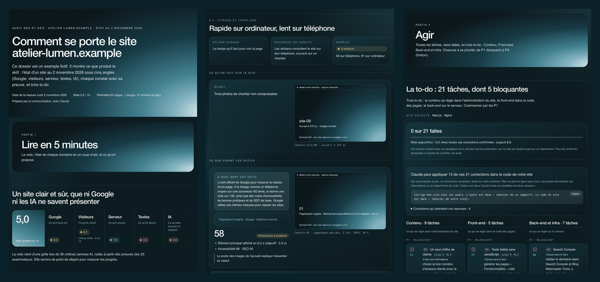

Skill Claude · open source · MIT
Il vous dit ce que les IA répondent vraiment sur votre site, corrige votre code, puis vérifie que ça tient. Un skill Claude avec la même grille à chaque audit, une preuve par constat, sans clé ni service payant en plus.
La plupart des audits s'arrêtent à une liste. Celui-ci continue, et vous laisse décider de ce qui part en ligne.
Donnez-lui le dossier de votre site. Il travaille sur une branche à part, un commit par correction, teste le site sur votre machine, et s'arrête si ce qui marchait marche moins bien.
Raison sociale, chiffres, clients : le rapport vous donne les questions, et un formulaire à remplir et à coller. Les secrets et les faits inventés sont refusés.
Vous relisez la branche et vous publiez. Claude relit ensuite le site en ligne et marque chaque correction : corrigée, mieux, ou pas encore.
La plupart des audits regardent une seule chose avec un seul outil. Celui-ci croise cinq angles, et chaque angle a ses preuves.
robots.txt, sitemap, redirections, fausses 404, canonicals, hreflang, et surtout : le texte est-il là sans JavaScript ?
Core Web Vitals, téléphone à 375 px, accessibilité WCAG, appel à l'action, formulaire, preuves de confiance.
Temps de réponse, compression, cache, TLS, en-têtes de sécurité, traceurs avant consentement.
Titles, descriptions, aperçus de partage, fautes, et les mêmes faits partout : un chiffre contradictoire, Google et les IA le répètent.
5 questions fixes posées à ChatGPT, Google Mode IA, Brave et Perplexity. Qui est cité à votre place, et quels faits faux circulent sur vous.
Chaque constat est vérifié, hypothèse ou non vérifiable. Une capture réelle avec un cadre rouge, ou un lien. Aucune promesse de classement.
Une commande compare deux audits d'un site. La note ne compte que les critères vérifiés les deux fois, les outils suivent des seuils de bruit, et une citation par une IA compte si elle revient au moins 2 fois sur 3. Une tâche sortie de la liste est « plus dans la liste », pas « faite ».
6 catégories, 5 critères chacune, notés 0, 1 ou 2. Mêmes outils, mêmes réglages, mêmes questions à chaque audit : quand la note bouge, c'est le site qui a bougé, pas la méthode. Un critère invérifiable est retiré du calcul, jamais deviné, et le script refuse un dossier dont les notes ne correspondent pas aux critères.
| Catégorie | Ce qu'on regarde | |
|---|---|---|
| A | Exploration et indexation | accès des robots, une seule version du site, codes HTTP, rendu sans JavaScript, architecture |
| B | Performance et front-end | LCP, INP, CLS réels, PageSpeed téléphone, images, JavaScript et CSS, mobile |
| C | Serveur, sécurité et vie privée | TLS et HSTS, en-têtes de sécurité, compression et cache, temps de réponse, consentement |
| D | Contenus et SEO éditorial | titles, descriptions et partage, structure, profondeur, justesse des faits, fraîcheur et langues |
| E | Expérience, accessibilité et conversion | les 5 premières secondes, appel à l'action, formulaire, preuves, WCAG |
| F | GEO et autorité | données structurées, robots des IA et llms.txt, entité, contenus citables, présence dans les réponses |
Chaque problème devient une tâche précise, avec sa correction et un « Vérifié quand… » que n'importe qui peut refaire. Elle va dans la to-do de la personne qui peut la faire.
Chaque tâche dit où agir et quoi coller pour la plateforme du site, montre la page avant et après, et arrive avec des fichiers prêts : en-têtes de sécurité, llms.txt, données structurées, titres. Ce sont des brouillons à relire, et rien n'est jamais appliqué au site.
Tout part d'un seul fichier, audit.json. Les scripts en tirent un dossier HTML en cinq parties, son PDF, une page unique à envoyer par mail, la to-do en Markdown et en CSV, et un PowerPoint d'une centaine de slides aux couleurs de la marque.

Activité, public, objectif, CMS. Rien à redemander la fois suivante.
Relevé des pages en arrière-plan, 19 outils, le panel des IA, les captures.
30 critères avec leur preuve, 9 domaines, les tâches.
HTML, PDF, page unique, PowerPoint, to-do. Contrôlés avant livraison.
Le même protocole dans 1, 3 ou 6 mois, avec des seuils de bruit.
Pour l'audit rapide, Claude Code et Python 3.9 ou plus suffisent, sans navigateur ni clé d'API. L'audit complet demande aussi un navigateur piloté par Claude, et Node.js pour le PowerPoint.
# dans Claude Code : /plugin marketplace add Tania-bezancon/audit-seo-geo /plugin install audit-seo-geo@tania-bezancon # puis, ou demandez-le avec vos mots : /audit-seo-geo:audit-seo-geo quick https://www.votre-site.fr # 15 minutes /audit-seo-geo:audit-seo-geo full https://www.votre-site.fr # une journée
Il ne promet pas de classement. Il mesure, il range, il dit quoi corriger. Les positions et les citations par les IA dépendent aussi des autres.
Il ne remplace pas Search Console. Sans accès, il le dit dans les limites et en fait une tâche P1.
Il ne publie jamais à votre place. Un audit ne change rien. Votre code ne change que si vous le demandez, sur une branche, et vous décidez de ce qui part en ligne. Il ne remplit aucun formulaire et ne coche aucune case « je suis humain ».